Para implementar el backend
Para implementar el backend se puede aplicar la tecnología llamada funciones sin servidor (serverless functions) de Netlify.
Las funciones sin servidor son como las funciones que normalmente se escriben en JavaScript o TypeScript. Con la diferencia de que se pueden llamar de manera remota, como consumiendo un endpoint de API REST.
Usando las funciones sin servidor se puede implementar casi toda la lógica o procesos del backend del 2do Parcial.
Por ejemplo, se puede implementar el proceso de traducir un boceto a un diseño que se pueda editar en el software, llamando a la API de Gemini dentro de una función sin servidor que recibe en uno de sus parámetros la foto que contiene dicho boceto y devuelve como resultado el diseño equivalente, obtenido mediante IA.
Sin embargo, para aplicar adecuadamente las funciones sin servidor es necesario conocer los límites de este tipo de funciones.
Límites de las funciones sin servidor
Las funciones sin servidor de Netlify tienen los siguientes límites :
- 1024 MB de memoria RAM
- Límite de ejecución de 30 segundos para funciones síncronas, incluidas las programadas
- Límite de ejecución de 15 minutos para funciones en segundo plano
- Límite de tamaño de carga útil de solicitud y respuesta de 6 MB para funciones síncronas con búfer
-
Límite efectivo inferior para cargas útiles de solicitudes binarias.
- Las solicitudes con cargas útiles binarias, como la carga de imágenes, se codifican en Base64. Esta codificación supone una sobrecarga de aproximadamente el 30% en relación con el tamaño de los datos binarios originales, lo que reduce eficazmente el límite de tamaño de la carga útil de la solicitud binaria a 4,5 MB.
-
Límite de tamaño de carga útil de respuesta de 20 MB para funciones síncronas transmitidas (streamed)
- Límite de tamaño de carga útil de solicitud y respuesta de 256 KB para funciones en segundo plano
Fuente: https://docs.netlify.com/functions/overview/#default-deployment-options
En resumen, las funciones sin servidor deben devolver una respuesta en menos de 30 segundos y sólo pueden recibir datos binarios (fotos) que tengan un tamaño máximo de aproximadamente 4,5 MB.
Para crear una función sin servidor
Para crear una función sin servidor, primero abrir en Visual Studio Code el proyecto inicial del frontend que se creó en la sección "Para generar el proyecto inicial del frontend".
Luego, abrir una terminal presionando CTRL+J. Y seguir los siguientes pasos.
Ejecutar el siguiente comando para crear una función sin servidor llamada "ejemplo-funcion"
como se muestra en la siguiente imagen: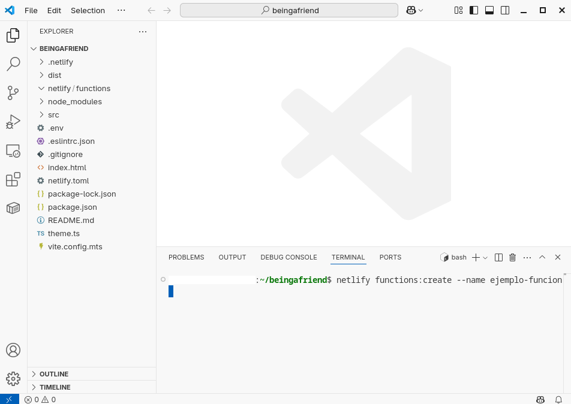
A continuación, elegir la opción "Serverless function (Node/Go/Rust)" usando las teclas de flecha y presionar ENTER:
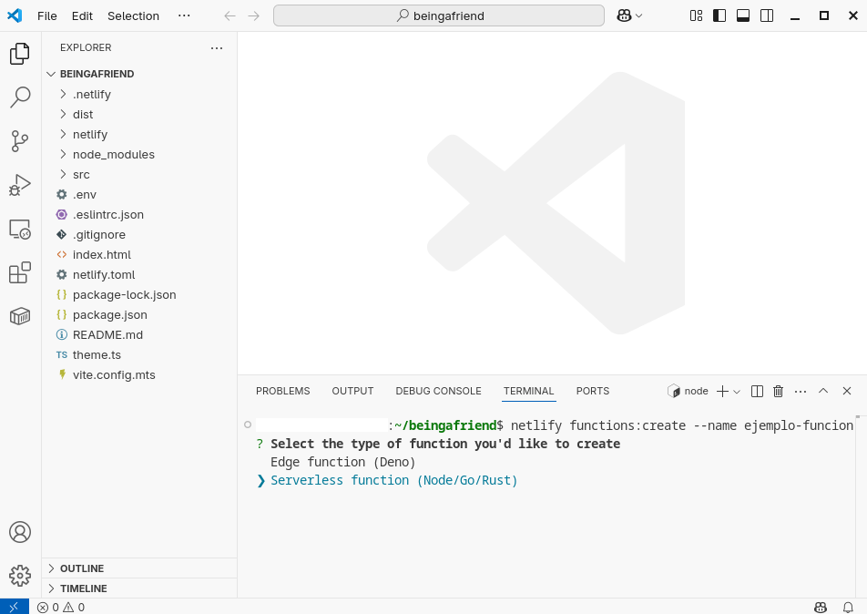
Elegir "TypeScript" como lenguaje de la función:
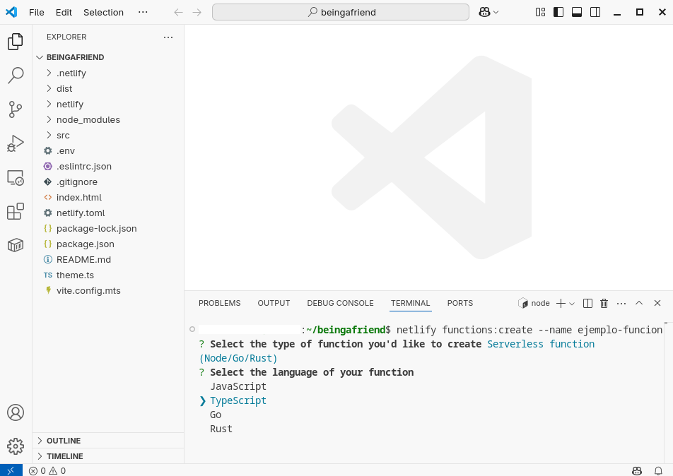
Elegir "[hello-world]" como plantilla de la función, usando las teclas de flecha y presionar ENTER:
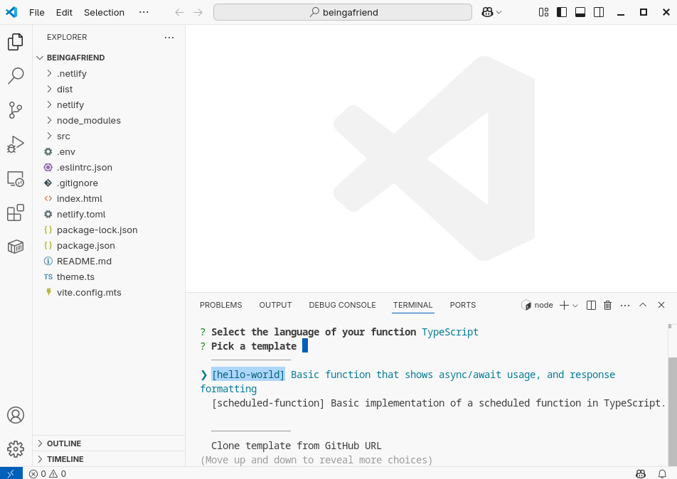
Esperar a que la creación de la función termine:
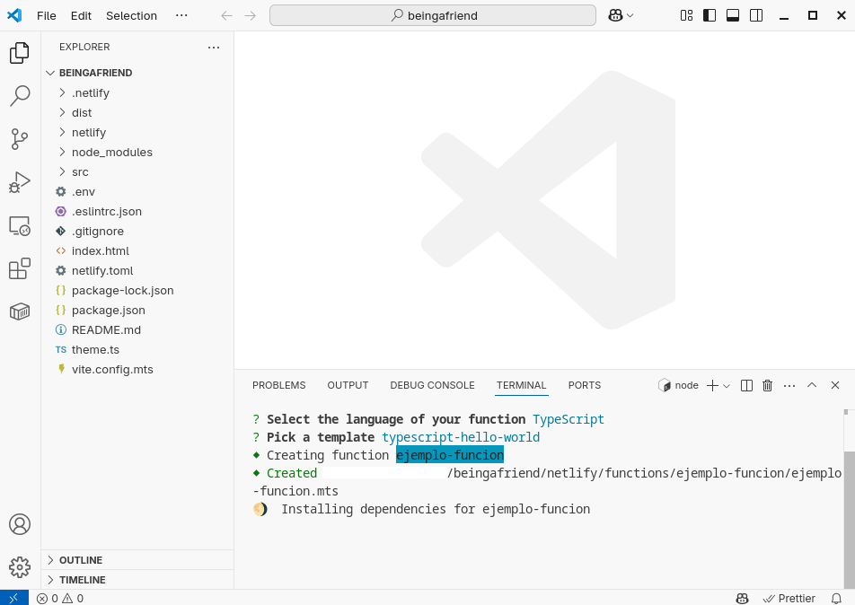
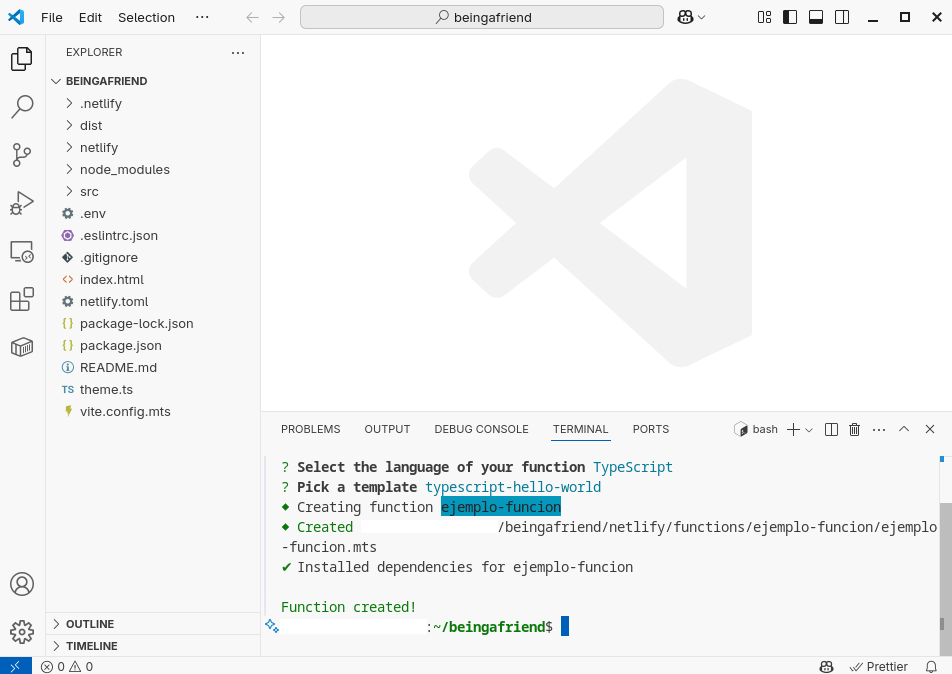
Como se muestra en la imagen de arriba, la función ha sido creada.
Luego, abrir el archivo de la función que se ha creado
en netlify/functions/ejemplo-funcion/, como se muestra en la siguiente imagen:
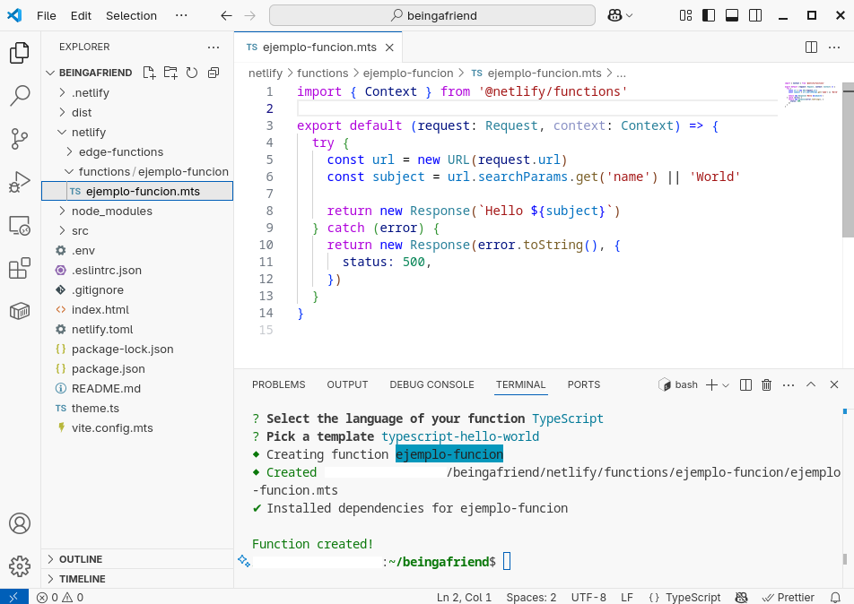
En la imagen de arriba, en el código de la función que se ha creado, se puede observar lo siguiente:
- La función recibe los parámetros
(request: Request, context: Context):- El parámetro
requestpermite acceder a los datos de la petición del cliente que llama a esta función. Uno de estos datos podría ser una foto con un boceto de una interfaz de usuario (o formulario) que se quiere traducir a un diseño, mediante IA, que pueda ser editado en el software que se está desarrollando. (Ver la documentación de la claseRequest). - El parámetro
contextpermite acceder a los datos relacionados con el cliente y con el backend, tales como: id del backend Netlify, cookies, información geográfica del cliente, ip del cliente, etc. (Ver la documentación del parámetrocontext)
- El parámetro
- La función devuelve como respuesta un objeto de tipo
Response(Ver la documentación de la claseResponse). - La función es una función síncrona. Esto significa que cuando el cliente llama a esta función permanece conectado en espera hasta recibir la respuesta de la función para luego, por ejemplo, mostrar una página o realizar otra tarea. (Ver más información sobre funciones síncronas en Netlify)
Para llamar a una función sin servidor
Para llamar a una función sin servidor de Netlify,
se debe saber que
Netlify crea automáticamente un endpoint para cada función
, usando el formato:
https://<YOUR-DOMAIN>/.netlify/functions/<FUNCTION-NAME>
Es decir, que para llamar a la función ejemplo-funcion
desde el frontend, se puede hacer una petición de tipo GET
al endpoint /.netlify/functions/ejemplo-funcion
Para probar a llamar a la función sin servidor creada en el punto anterior, ejecutar primero el frontend mediante el siguiente comando:
como se muestra en la siguiente imagen:
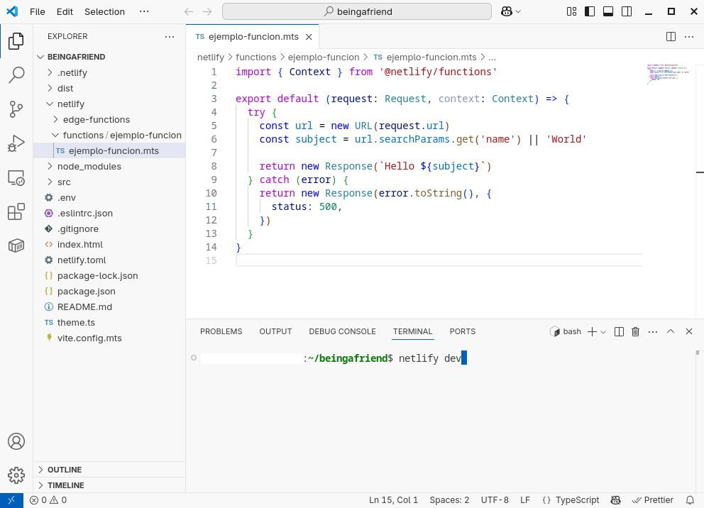
Usando fetch
Se puede llamar a la función ejemplo-funcion
desde el frontend usando la función fetch de JavaScript.
Por ejemplo, usando el siguiente código:
try {
const response = await fetch("/.netlify/functions/ejemplo-funcion");
if (!response.ok) {
throw Error("No se pudo obtener una respuesta de la función.");
}
const data = await response.text();
console.log(data);
} catch (e) {
console.error(e);
}
Para ejecutar el código de arriba se puede usar el navegador web Google Chrome:
- Abriendo este enlace http://localhost:8888 del frontend corriendo localmente
- Presionando F12 (estando en la página del frontend que se acaba de abrir)
- Pegando el código de arriba en la pestaña "Console" (que se mostró al presionar F12)
- Y presionando ENTER
como se muestra en la siguiente imagen:
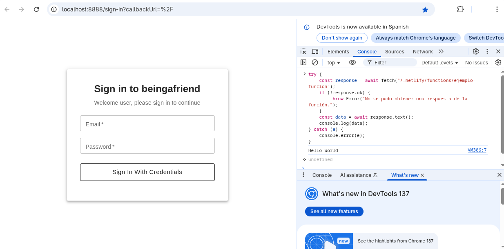
En la imagen de arriba, se puede ver que en la parte derecha de la página (abierta presionando F12) se ha pegado el código en la pestaña "Console", se ha ejecutado dicho código presionando ENTER, y se ha obtenido como respuesta el texto "Hello World".De esta misma forma, se puede usar la función fetch de JavaScript
en cualquiera de las páginas del frontend.
Usando cURL
Mientras se desarrolla el backend, también se puede llamar
a una función sin servidor, como la función ejemplo-funcion,
usando cURL,
como se muestra a continuación:
curl -X GET "http://localhost:8888/.netlify/functions/ejemplo-funcion" -H "Accept: application/json"
curl -X GET "http://localhost:8888/.netlify/functions/ejemplo-funcion?name=Mundo" -H "Accept: application/json"
Usando Postman
También se puede llamar a ejemplo-funcion
usando Postman:
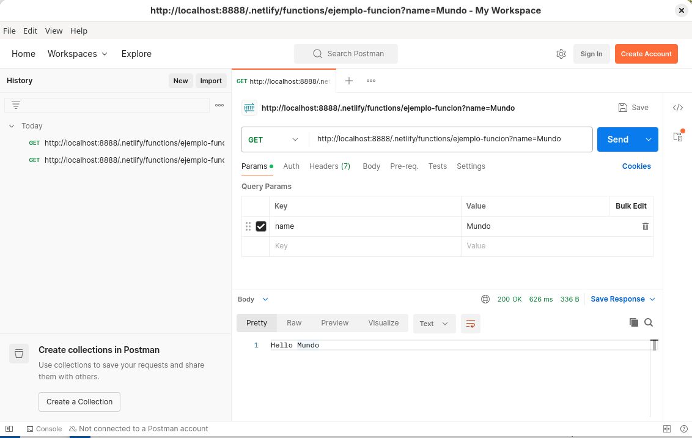
Usando un navegador web
Otra forma de llamar a ejemplo-funcion
es abriendo su respectiva URL en un navegador web, como se muestra a continuación:
http://localhost:8888/.netlify/functions/ejemplo-funcion
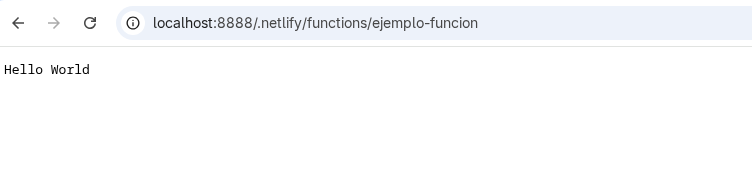
http://localhost:8888/.netlify/functions/ejemplo-funcion?name=Mundo
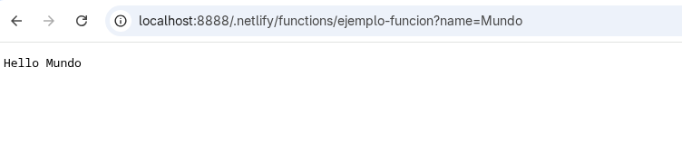
Para implementar el backend
La lógica del backend se puede implementar casi completamente usando funciones sin servidor que pueden ser llamadas desde el frontend.
Para el 2do Parcial, lo que no podría implementarse usando las funciones sin servidor es la parte colaborativa. La parte colaborativa del 2do Parcial es la que permite que dos o más usuarios del software puedan editar al mismo tiempo un mismo diseño de interfaces de usuario.
Para implementar la parte colaborativa del 2do Parcial se puede aplicar la tecnología que se muestra en la sección "Colaboración".